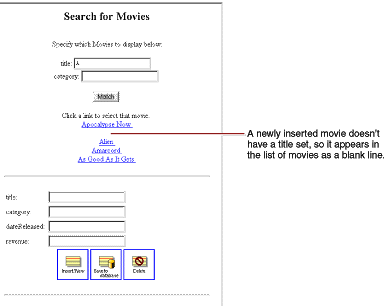
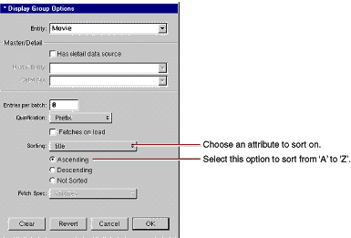
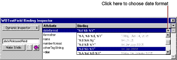
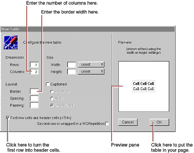
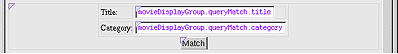
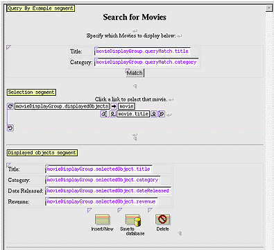

| PATH |

You may have noticed that your application doesn't list fetched movies in any particular order. Also, when you insert a new movie, it appears in the list of movies as a blank line.

In this section you'll tidy up the user interface to fix these things and a few others. Specifically, you'll
movieDisplayGroup to
sort the movies it displays.You can also put the query part of the page in a table and
capitalize Main.wo's
text field labels-for example, use "Title" instead of "title"
and "Date Released" instead of "dateReleased."
You can change your application to sort movies alphabetically without writing any code. Display groups manage sorting behavior, and WebObjects Builder provides a Display Group Options panel for configuring this and other characteristics of display groups.
movieDisplayGroup variable
in the object browser.The Display Group Options panel opens
for configuring movieDisplayGroup.

title attribute
in the Sorting pop-up list.WebObjects Builder stores your settings in an archive that
specifies how to create and configure movieDisplayGroup at
runtime. The archive is stored inside your Main component in a file
named Main.woo. You can't
see the file from Project Builder because you're not meant to
edit it directly, but WebObjects Builder's object browser shows
you which of your component's variables are initialized from the
archive (or woo file)
so you don't have to view its contents directly.
When new enterprise objects are created in your application,
it's common to assign default values to some of their properties.
For example, in your Movies application it makes sense to assign
a default value for the title attribute
so a new movie won't be displayed in the list of movies as a blank
line.
You could write an action method for the Insert/New button
instead of binding it directly to the display group insert action
method. In the custom action, you would create a new Movie object,
assign default values to it, and then insert the new object into
the display group. However, there are two additional ways to specify
default values for new enterprise objects, without making explicit
assignments:
For a particular situation, one of the approaches is usually
better than the other. If the default values are intrinsic to the
enterprise object, assign them in the enterprise object class. For
example, consider a Member class with a memberSince property.
It's likely that you would automatically assign the current date
to memberSince instead
of forcing a user to supply a value. You'll see how to use this
technique in "Adding Behavior to Your Enterprise Objects".
On the other hand, if the default values are specific to an application or to a particular user interface, explicitly initialize the object in code or specify the default values using a display group. In the Movies application, the need for default values is motivated by Main's user interface: you need to provide a default value so users can tell when a newly inserted record is selected. In another situation, you might not want a new movie to have a default title; you might instead want a new movie's title to be blank.
The Movies application specifies default values for newly
created Movie objects using the display group, movieDisplayGroup.
Main.java in
Project Builder. public Main(WOContext context) {
super(context);
NSMutableDictionary defaultValues = new NSMutableDictionary();
defaultValues.setObjectForKey("New Movie Title", "title");
movieDisplayGroup.setInsertedObjectDefaultValues(defaultValues);
}This
method assigns the value "New Movie Title" as the default value
for a new movie's title attribute.
When movieDisplayGroup inserts
a new movie (as it does when a user clicks the Insert/New button),
it creates a new movie and assigns this default value to that movie.
To change the way that dates are displayed, you assign a date format to the element that displays the dates.
dateReleased text
field, which is near the bottom of the Main component window.Notice
that the text field has a dateformat attribute
that is bound to the string "%m/%d/%Y". This binding tells the
text field that it's displaying dates and describes how to format
them. The %m conversion specifier stands for month as a decimal
number, %d stands for day of the month, and %Y stands for year with
century.
This date format displays dates as 14 Jan 2005. The %b conversion specifier stands for abbreviated month name, and %Y stands for year with century. You can create your own date formats with any of the conversion specifiers defined for dates. For more information, see the NSTimestamp class specification in the Foundation Framework Reference.

In addition to a dateformat attribute,
text field elements also have a numberformat attribute.
revenue text
field.The revenue text
field's numberformat attribute
has no binding.
numberFormat attribute
(including the quotes).Using this number format, the Movies application formats the number 1750000 as $1,750,000. For more information on creating number formats, see the NSNumberFormatter class specification in the Foundation Framework Reference.
You can tidy up the user interface even further by putting
the query part of the page in a table to match the editing part
of the page. Also, you should consider capitalizing Main.wo's text
field labels.
To put the query part of the page in a table, follow these steps:
The table panel appears.

The table doesn't resize to accommodate new cell content until you're done typing; that is, until you move the cursor out of the edited cell.
Just click a text field to select it. When a text field is selected, it appears shaded with a box around it. Choose Cut from the Edit menu, double-click the cell to select its text, and choose Paste from the Edit menu.
When you're done, the query part should look like this:

Now edit the text labels in the editing part of the page and put any other finishing touches on the page that you want. The finished component might look something like this:

© 2001 Apple Computer, Inc.